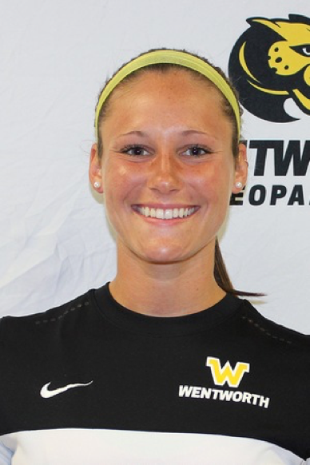

Story
CheckMe is a social network sensitivity and profanity checker. It is the CheckMe teams goal to make sure you never lose out on an important business oppertunity because of a comment or posts made years ago on your social media account. With more and more companies checking possible employees social media life, it is becoming increasingly important to go back and remove posts which may damage your image. You may have found the dream job, in the dream company, with the perfect location, and coworkers. It would be awful if your posts from 10 years back showed an inappropriate comment which was made in anger or desperation. Delete or edit that posts with CheckMe!Simply create a free account and click the scan button on the homepage, when asked to authorize your social media for CheckMe to read your posts, simply click accept and then we will scrub through your history and show you the results using our sensitivty, profanity, racist, and sexist post checking algorithim.
Creators
Jonathan Keys 
KeysJ@Wit.edu
Software Developer & Architect
Senior, Wentworth Institute of Technlogy. 2017.
Jon is a senior at Wentworth Institute of Technology majoring in Computer Science. Although he was born in Australia, Jon grew up in Norfolk Massachusetts, where he currently resides, commuting between school and his part-time job at Virgin Pulse. He has worked intermittently at Virgin Pulse during the past 2 years, completing 3 internships and continuing part-time during the school semesters. If Jon isn’t at school or work, you can easily find him in the gym, his 6’8” stature is hard to miss! Jon’s love for soccer has carried through to his interest in video games, with his first choice of game being FIFA, where he proudly represents his favorite team Chelsea each time he plays.Alex Fallah
FallahA@Wit.edu
Mobile Developer & Architect
Senior, Wentworth Institute of Technlogy. 2017.
Alex is a senior at Wentworth Institute of Technology majoring in Computer Science. The Westwood Massachusetts native currently resides in Boston, with his two cats Stella and Daisy. Alex’s three internships, at Education First, Analogic Corporation, and ISODevelopers, as well as an eight-week mobile development boot camp in San Francisco, has deepened his passion for mobile development, specifically iOS, which he wishes to pursue a career in upon graduation.Colby Daly
DalyC2@Wit.edu
Software Developer & Architect
Senior, Wentworth Institute of Technlogy. 2017.
Colby is a senior at Wentworth Institute of Technology majoring in Computer Science. The Swanton Vermont native currently resides in Boston where he plans to stay upon graduation. His two internships, at Analog Devices and Game Show Network, have steered him in the direction of Software Engineering, which he plans to pursue a career in. Colby is a die-hard Duke fan, growing up watching every basketball game with his dad, that is when he wasn’t on the court himself.

Rachel Perras